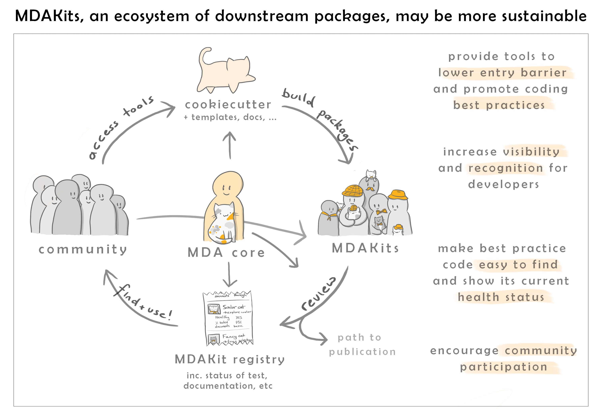

About MDAKits
What is an MDAKit?
MDAnalysis Toolkits (MDAKits) are standalone packages containing code using components from the MDAnalysis library with the aim of solving specific scientific problems or in some form enhance the functionality of the MDAnalysis core library. An MDAKit can be written by anyone and hosted anywhere.
At the discretion of their authors, MDAKits can be registered in this MDAKit registry. To do so, MDAKits have to meet a minimum set of requirements including; being open-source licensed, hosted in a version control system, have a clear designation of code authors/maintainers, have some kind of documentation on their use, and have a minimal set of tests in place.
Registered MDAKits are then listed here with the intention of providing a centralised place where the community can find out more about them. Where possible, the MDAKits are also continually tested against the latest and development versions of MDAnalysis. This ensures that users and developers have an up-to-date view of the code health of an MDAKit.
Why?
The open sharing of code that abides by the basic principles of FAIR (findability, accessibility, interoperability, and reusability) is essential to robust, reproducible, and transparent science. However, scientists typically are not supported in making the subtantial effort require to make software FAIR-compliant.
{kind=link}
One potential option, and one that MDAnalysis has historically attempted, is to attempt to add as many methods as possible in a single centralised library. However, this is a non-ideal solution.

Our goal with MDAKits is to lower the barrier for researchers to produce FAIR software.
We wish to support developers in creating new pakages, guiding them through the process of achieving best practices and FAIR compliance. At the same time, we hope to make MDAnalysis useful to a broader community.
{kind=link}
Read our whitepaper!
To learn more about MDAKits and our vision for more sustainable community developed molecular simulation tools, please see our whitepaper.